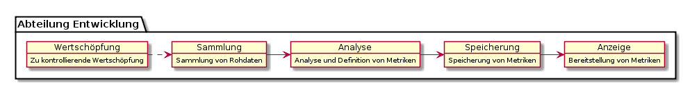
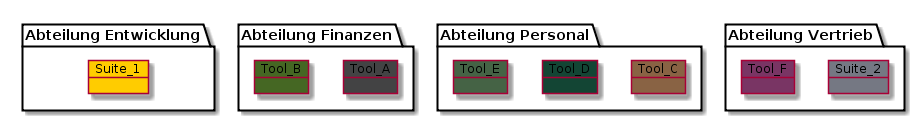

Eine kurze Einleitung in die Motivation von datablocks
Mit ⇒ geht es weiter...
Erstellt vom useblocks team
Zu den anderen useblocks Präsentationen

Bei mehreren Wertschöpfungsketten in unterschiedlichsten Abteilungen finden sich zahlreiche, unterschiedlichste Toolketten im Einsatz.

Abteilungs- und toolübergreifende Verweise oder gar Analysen sind kaum möglich.
Auch die erhobenen Metriken und ihre weiterführende Informationen sind nicht einheitlich definiert und verwend- oder vergleichbar.
Unterschiedliche Definition von Qualität
Unterschiedliche Formeln zur Berechnung von Reakationsgeschwindigkeiten
Fehlende Hintergrundinformation zu: guten/schlechten Bereichen, Verantwortlichkeiten, Einfluss auf Firmenziele, ...
datablocks Integration
datablocks verbindet sich mit sämtlichen Kennzahlen- Tools und macht eine gemeinschaftliche Verwendung und Pflege möglich.
Sie können für jeden Aufgabenbreich ein anderes Tools einsetzten, so dass Sie in der lage sind für die Erhebung das Tool von Abteilung A, die Überwachung etwas von Abteilung B und für die Steuerung ein Werkzeug der Abteilung C zu verwenden.
BILD mit EBENEN von db
(Spätere Punkte: open source, )
datablocks Data Extensions
Egal, ob ein tool sämtliche Daten schon selbst erhoben hat oder ob es nur die nackten Zahlen liefert. datablocks erlaubt ihnen sämtliche Kennzahlen mit Information zu verfeinern und diese für die nachgelagerte Tätigkeiten mitzuverwenden.
Z.B den Aktions-Verantwortlichen bei schlechten Zahlen zu informieren.
(spätere Punkte: Verständnis, Rollen, Verlinkung zu anderen Systemen, Statisitken und Verwendung)